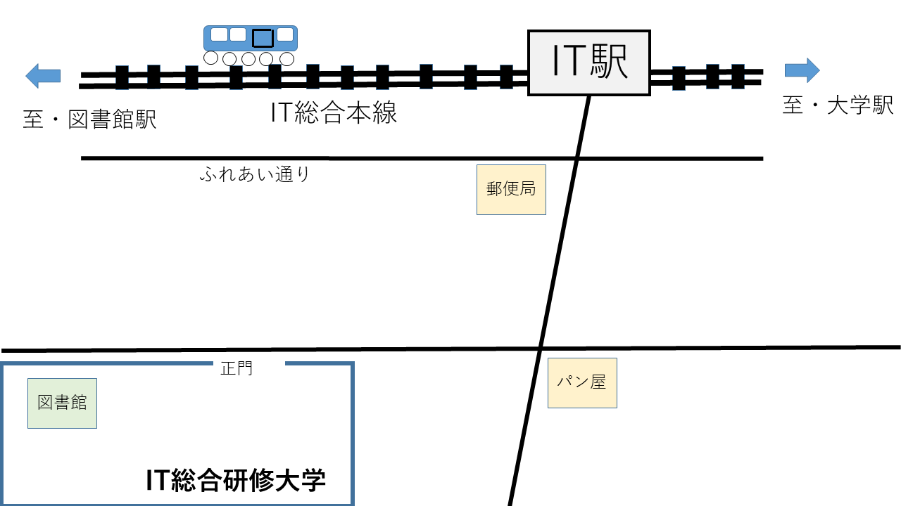

IT総合研修大学図書館
１．お知らせ
このIT総合研修大学図書館は<実際には存在しません>
受講生のみなさまの心の中<only>で存在をしています。
２．ご利用案内
（１）アクセスマップ

（２）開館
| 曜日 |
時刻 |
| 月～金 |
9時～17時 |
| 土 |
10時～15時 |
| 日 |
休館 |
３．各種サービスへのリンク
一覧
・CiNii Research https://cir.nii.ac.jp/ja
・国立国会図書館サーチ https://iss.ndl.go.jp/
４．コレクション紹介
The IT総合研修大学所蔵コレクション
IT総合研修大学で集めたつもりのコレクションです。実際は存在しません。
- 魁！ 男塾
- 戦後日本の学校教育の基本資料
- キン肉マン
- 張り巡らされた緻密な伏線や物理学を学べる資料
５．館長あいさつ
館長から以下の挨拶をいただきました。
「図書館は成長する有機体」と申します。IT総合研修図書館では...
６．お問合せ
問い合わせフォーム
ページのトップへ
---------------------------
IT総合研修図書館運営委員会